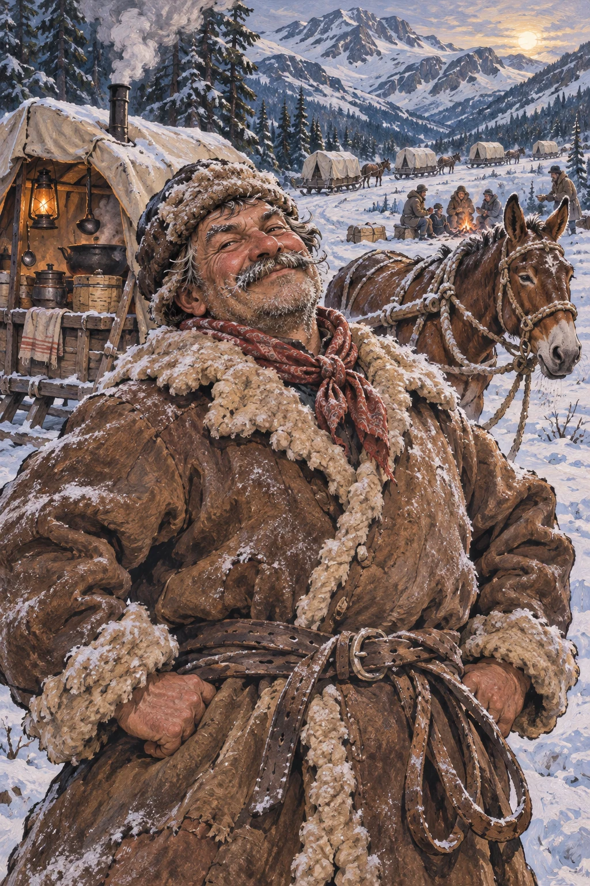

Пройти Скальную Полку под нагруженным карнизом, пережить лавину и откопать Вавилу до темноты.
Херет ВаллТарма Вязь

Вавила УхабСельда НестМалкен РускБреша Кальт
Серпантин от Разъезда идёт вверх. Полозья скрипят по насту, постромки звенят от инея. Сзади, сначала в трёхстах шагах, потом в двухстах, по вашей колее бегут серые тени — парами, вскачь, не ложась. Мулы оглядываются и тянут быстрее, чем их гонят. Впереди дорога прижимается к скале, а над скалой висит белый карниз, толстый, как войлочный навес над двором. Солнце поднимается над ним всё выше.
Подготовка и роли
Перелом кампании. Пороги — первая минута сцены 1. Стая жмёт хвост, и обоз выходит к Полке в полдень; этого не отменить. Лавина сходит всегда: сейчас, если идут, или утром, если ждали (лишняя ночь: паёк и Тепло −1). Сходят только Кухонные сани: Еда −8, Тепло −4 (или всё, что есть); котёл с ними; Пшено цел. Белая на карнизе — только белое движение на линии отрыва; не называйте её и не описывайте. Вавила засыпан, если его не выхватили (Атлетика СЛ 13). Сцена 3 решает цену: цепь с верёвкой Остапа — без потерь; все копают — Еда −1; половина без успеха — Вавила обморожен. Ждали утра — утром покажите на карнизе то же белое движение, лишняя ночь стоит, как написано. Сцена 3 всегда кончается кругом в сумерках и словами Тармы, что Кухонные отстали из-за её полозьев. Ночь под навесом: Тепло −1, паёк по листу; Тепла нет — холодная ночь (очередь холода: Херет первым, мулов −1). Обычный итог после ночи: бережливый 4/4, средний 0/1, расточительный 0/0. Херет рассказывает о давней беде только на вопрос, почему он не хочет идти. Вавила признаётся в споре, когда его откапывают. Ночью Белая копает лаз к Кухонным саням и уносит солонину; игрокам этого не видно — это находка вечера 4.
Остап Шов: его верёвка становится цепью копальщиков от саней к шесту Херета — Вавилу достают, а круг не пустеет.
Кея Лиственница: смотрит на карниз в миг треска и видит белое движение на линии отрыва.
Тирна Очаг: держит мулов, когда стая жмёт хвост, и ловит Пшено с обрезанными постромками.
Эйра Брус и Юст Грань, если за столом: Эйра греет откопанного у огня, Юст вместе с Херетом читает срез. Без них это делают другие.
Сцена 1 · 50 минут
Полдень у Полки
Первая минута — лист вслух: утро, Еда и Тепло, порог по листу. Обоз идёт серпантином; позади по колее — волчья цепочка парами, вскачь, ни одной лёжки. Короткий вой, и мулы рвут поводья; обоз сам не замечает, как прибавил шагу. К Скальной Полке выходят ровно в полдень: дорога прижата к скале, внизу обрыв, сверху карниз. У дороги — срез снега («Срез над Полкой»): внизу тёмный плотный слой, сверху толстый светлый рыхлый. Херет втыкает шест в красном чехле в снег и дальше не идёт: «Полку после полудня не беру. Не спрашивайте». Бреша смотрит на лист, потом на хвост: «Сзади волки. Спереди карниз. Решайте». Сельда заводит Кухонные сани в конец: «Кухня в хвосте — дым не в глаза мулам». Вавила хлопает Пшено по шее: «Котёл — он как жена: тяжёлый, а без него никуда». Малкен ставит нарту рядом с Кухонными: у них с Вавилой спор на мешок сухарей, кто первым выйдет с Полки. Тарма меряет рыхлый слой ладонью и молчит. Если Херета спросить, почему он не хочет, он отвечает, глядя на карниз: «Двадцать три года назад. После полудня. Со мной шли люди — одного я там и оставил».
Выборы
Идти сейчас и порознь: по пятьдесят шагов между санями, быстро и без крика.
Ждать утра под скалой: лишняя ночь (Тепло −1 и паёк), карниз сойдёт утром.
Решить, кто идёт у каких саней, — особенно у Кухонных, последних.
Спросить Херета, почему он не берёт Полку после полудня.
Проверка и путь без броска
Природа СЛ 12: рыхлый слой толщиной в локоть, и Херет добавляет: «Вес на карнизе — и пойдёт». Без броска: Херет показывает слои шестом и говорит то же. Лавина сходит в любом случае. Порознь — она берёт только Кухонные сани. Ждали утра — лишняя ночь под скалой: Тепло −1 и паёк (Еда −2, или −1 с «П»); утром, когда последние сани на Полке, на карнизе то же белое движение — и он сходит. Юст Грань, если за столом, читает срез вместе с Херетом; без него это делает Херет.
Если не получилось
Если сани не развели, вал задевает и Шерстяные: Дымка вырывается сама и вытягивает их, по листу без цены, но все видят, как близко прошёл снег.
Сцена 2 · 50 минут
Белый вал
Обоз растянут по Полке. Полозья скрипят, постромки обледенели, мулы идут, прижав уши. Над головой — сухой треск, как выстрел. Кто смотрит вверх, без броска видит на линии отрыва белое движение: что-то большое и светлое на краю карниза — и сразу нет его. Херет кричит: «Вперёд! Не стоять!» Белая стена идёт вниз. Кухонные сани последние; Вавила на облучке, рядом Малкен с нартой — они как раз поравнялись на внешней колее. Вавила тянет повод: «Пшено, родной, не дури…» Кто стоит у Кухонных саней, решает сейчас. Снег проходит, как вода: шум, белое, тишина. Кухонных саней нет. Пшено стоит ниже по склону с обрезанными постромками и дрожит. Если Вавилу не выхватили, Херет втыкает шест в край языка: «Здесь. Здесь ушёл». Бреша достаёт лист и читает, не повышая голоса: «Восемь мешков. Четыре вязанки. Котёл. Пиши». Ведущий пишет: Еда −8, Тепло −4 — лавина на Полке. Малкен смеётся невпопад и замолкает. Стая метнулась вниз; её цепочка, парами и вскачь, уходит по колее под Полку и там обрывается у камней.
Выборы
Тому, кто у Кухонных саней: прыгнуть к Вавиле и тащить его с облучка.
Смотреть вверх, на карниз, и запомнить, что там двигалось.
Гнать передние сани вперёд, с Полки, не оглядываясь.
Отметить место, где ушли сани: шест Херета, рукавица, зарубка на скале.
Проверка и путь без броска
Атлетика СЛ 13 (тот, кто у Кухонных саней): оба отскакивают, Вавила не засыпан. Провал или рядом никого: Вавила режет постромки Пшена (мул цел) и уходит под снег с санями; Херет ставит шест. Без броска Вавила не потерян: его откапывают в сцене 3. Белое движение видно без броска. Счёт в любом случае: Еда −8, Тепло −4 (или всё, что есть); котёл под снегом.
Если не получилось
Если стол оцепенел, Тарма первой бежит к шесту с лопатой: «Копать! Здесь!» — и NPC бегут за ней.
Сцена 3 · 50 минут
Шест в снегу
Язык лавины лежит поперёк Полки, плотный, как утоптанный двор; шест Херета торчит из него красным пальцем. С перевала тянет позёмку. Если Вавила под снегом, его надо достать до темноты. Тарма копает рукавицами: «Сани — не люди. Сани бросают. Людей откапывают». Херет держит шест: «От шеста вниз по склону. Быстро». Копают все, половина держит круг — или цепь по верёвке Остапа от саней к шесту: копальщики сменяются, а круг не пустеет. Когда лопата стукнет о дерево, из-под снега хрипят: «Пшено цел? Это я. Я вывел наружу. Обогнать хотел». Малкен отворачивается к нарте. В любом случае в сумерки обоз встаёт кругом под навесом скалы. Тарма садится у края языка, там, где ушли Кухонные, и не встаёт: «Отстали — мои сани. Я гнула полозья. Я». Сельда считает уцелевшие мешки, постукивая ложкой по коробу: «Два мешка на ночь, если по-людски. Один — если по-волчьи». Стая подходит к свету и ложится у края; глаза в темноте не мигают. Если хвост никто не держит, серый утаскивает мешок с Шерстяных саней (Еда −1). Ночь под навесом: Тепло −1, паёк.
Выборы
Копать всем: Вавила к сумеркам цел, но круг пуст, и стая уносит мешок с Шерстяных (Еда −1).
Половина копает, половина держит круг: мешок цел, но без удачи Вавилу достают обмороженным.
Цепь по верёвке Остапа от саней к шесту: и Вавила цел, и круг под охраной.
Ночь: полный паёк (Еда −2) или полпайка (Еда −1, «П», завтра Слабость).
Проверка и путь без броска
Атлетика СЛ 12 (половина копает): успели до темноты — Вавила без отметины; провал — Вавила обморожен и с этой ночи едет на санях или нарте Малкена. Без броска — цепь по верёвке Остапа или «все копают» (Еда −1). Ночь: Тепло −1, паёк по выбору стола. Если Тепла нет — холодная ночь: обморожен Херет (первый в очереди холода), если никто из героев не возьмёт отметину себе; утром мулов −1.
Если не получилось
Если Вавилу выхватили в сцене 2, копать некого: сцена — тот же круг в сумерках и Тарма у языка; мешок с Шерстяных уходит, если хвост никто не держит (Еда −1).
Срез над Полкой
Вертикальный срез сугроба у дороги: внизу тёмный плотный слой, сверху толстый светлый, рыхлый. Над Полкой висит снежный карниз, как войлочный навес над дверью.
Что можно установить
Склон над Полкой нагружен: толчок или вес на карнизе сорвёт его. Полку проходят быстро и порознь, по пятьдесят шагов между санями, и не после полудня.
Получение
Вечер 3, сцена 1: посмотреть на срез, без броска; Херет показывает слой шестом. Природа СЛ 12 — подробность: насколько толст рыхлый слой («вес на карнизе — и пойдёт»).
Запасной путь
Херет отказывается идти после полудня: «Солнце карниз греет». Тарма меряет слой ладонью и называет число вслух.
Изменения после решений
Если Стол ждал утра под скалой. → Лишняя ночь по листу: паёк и Тепло −1. Утром, когда последние сани на Полке, ведущий показывает и белое движение на карнизе — потом карниз сходит; счёт лавины тот же.
Если Вавилу копали половиной, без верёвки, и проверка не удалась. → Вавила обморожен: с этой ночи едет на санях или нарте Малкена, в беге он несомый. Отметина в листе.
Если Кто-то видел белое движение на линии отрыва. → В вечере 4 это запасной путь к следам на линии отрыва: он помнит, куда смотреть.
Завершение вечера
В сумерках на линии отрыва снова белое движение — и нет его. Сельда пересчитывает мешки вслух, сбивается и начинает сначала.